Insomniac
Features and interviews for Insomniac, the US events company, written as a contributing editor. 170 pieces from the deep archive.

Emanuel Satie Drops Deep, Shimmering Rework of “All I Need to Get High”
25 April 2019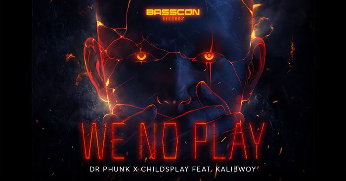
Dr Phunk and ChildsPlay Baptize the Basscon Records Imprint With Anthemic Debut Single “We No Play”
25 April 2019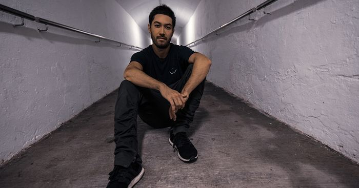
David Berrie Heats Up the Party Season With Ghetto-Leaning Grooves on “Talkin’ Bout”
25 April 2019Nølah Stuns With Sumptuous Melodic Techno Cut “Mandragora”
23 April 2019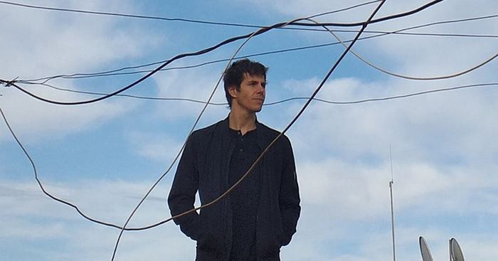
Gullen Seduces With Gorgeous Emotive Cut “Lydia’s Cove”
18 April 2019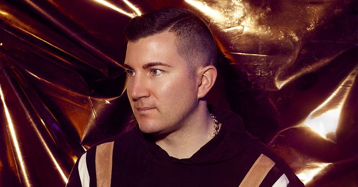
Ryan Blyth Throws a Fresh Lick of Paint on the Robyn S Classic “Luv 4 Luv”
12 April 2019
Ryan Blyth Throws a Fresh Lick of Paint on the Robin S Classic “Luv 4 Luv”
12 April 2019Odd Mob Turns in Savage Bass-Driven Remix of “Redlight”
11 April 2019Oscar G Reworks His David Morales Matchup With Percussive Remix of “Orisha”
5 April 2019FREAK ON Hits the Streets With His Debut ‘Freak Like This’ EP on the Prescription Records
5 April 2019Needs No Sleep Lands an Evocative, Powerful Roller With “Not My Question”
28 March 2019CJ Jeff Lunges Into a Deep Tech House Groove With “Silver Spoon”
26 March 2019Shadow Child Works Some Thunderous House Percussion Into “Strange Girl” Remix
25 March 2019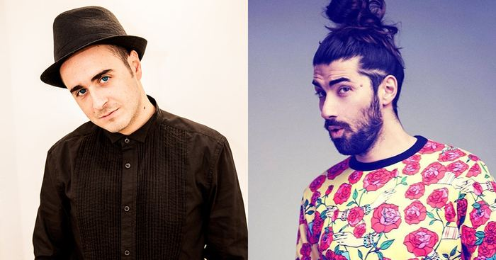
Piero Pirupa and Alex Kennon Team Up on Sultry Percussive Cut “Turning”
21 March 2019Nick Curly Locks the Dancefloor Into His Dense Hypnotic Groove “Zero Love”
21 March 2019Dr. Fresch & Sinden Unite Across Generations of Noise on ‘No Good’ EP for Insomniac Records
21 March 2019Morpei Joins the Desert Hearts Crew With a Grooving Display of “Desert Worship”
19 March 2019Kolombo Teams With Soulful House Legend Ron Carroll to Show How “We Disco Baby”
15 March 2019Jaden Thompson and Dub Clap Collab on a Classy Club Banger That Brings the “Freak Groove”
14 March 2019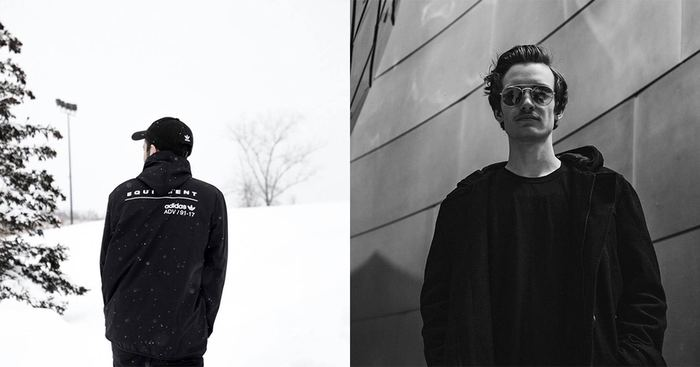
Ryan Collins and Kyle Walker Call for a “Revolution” With Grungy Bass House Collab
7 March 2019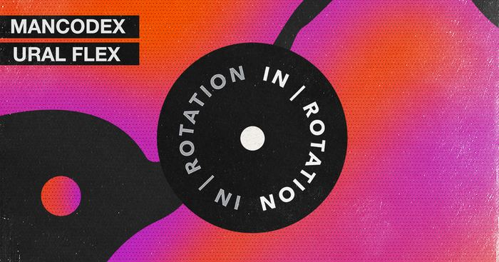
Mancodex Rumbles on Tight 2-Tracker ‘Ural Flex’ for IN / ROTATION
7 March 2019Metronome #164: Raw District
5 March 2019Iglesias Delivers Pure House Appeal on Soulful and Driving “Chubby”
5 March 2019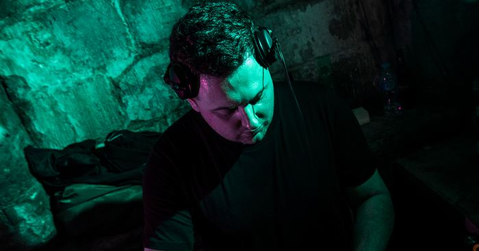
Rudosa Helps Launch Outworld Imprint With the Thunder of “The Evolution”
1 March 2019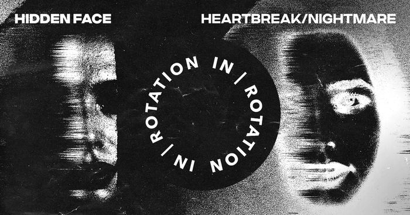
Hidden Face Builds the Mystery and Melody With ‘Heartbreak / Nightmare’ on IN / ROTATION
28 February 2019
CastNowski Unleashes Legit G-House Ruckus With “Five Star Dish”
28 February 2019Groovebox Crafts Infectious Tribal-Tinged Tech House With “La Danse”
25 February 2019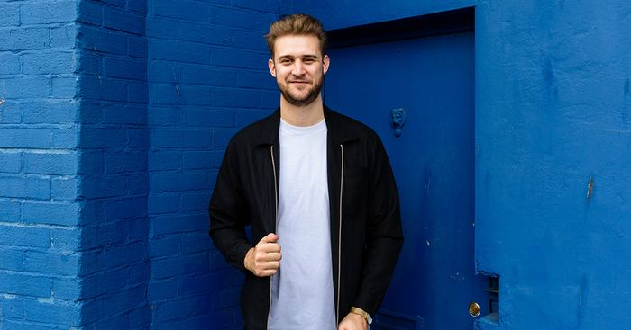
The Golden Boy Preps Killer Tech Cut for All the “Party People”
21 February 2019Bijou Digs Deep Into His “Memories” for Emotional House Release on Insomniac Records
20 February 2019Eli & Fur Are “Coming Back” With a Sumptuous New Deep Cut
19 February 2019San Holo Showcases His Stunning Melodic Sensibilities With Euphoric EDC Mexico 2019 Mix
15 February 2019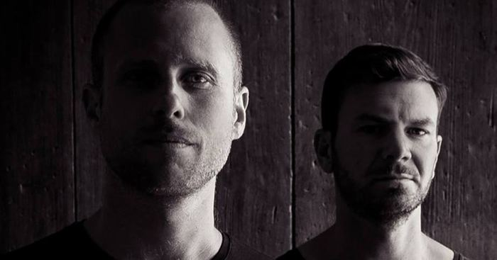
Audiojack Offer a Hypnotic Look “Behind the Curtain” With Heads-Down Tech Cut
14 February 2019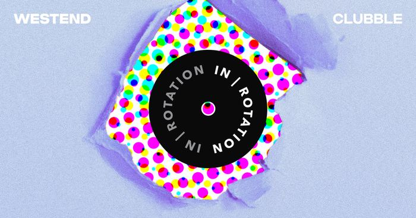
Westend Shows Some Tech House Muscle With ‘Clubble’ EP on IN / ROTATION
7 February 2019Sllash & Doppe Deliver Deep Groover “Lego”
6 February 2019Huxley Hits Hard With Stomping House Groove “Freekon”
24 January 2019Metronome #161: Dustycloud
22 January 2019Cressida and Cabriolet Paris Fire up 2019 With Progressive Trance Powerhouse “Sub Culture Code”
16 January 2019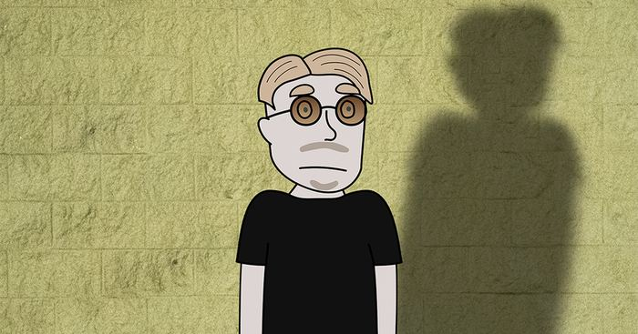
Metronome #160: Noizu
15 January 2019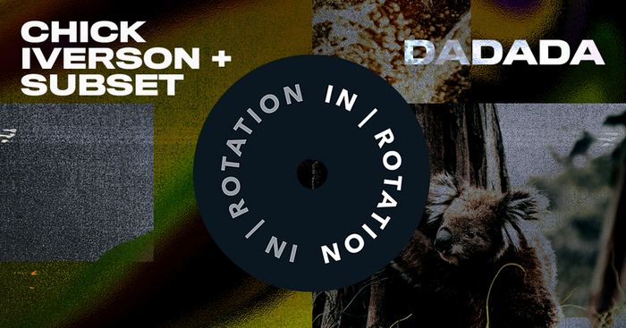
Chick Iverson and Subset Join Forces on Bombastic ‘Dadada’ EP for IN / ROTATION
15 January 2019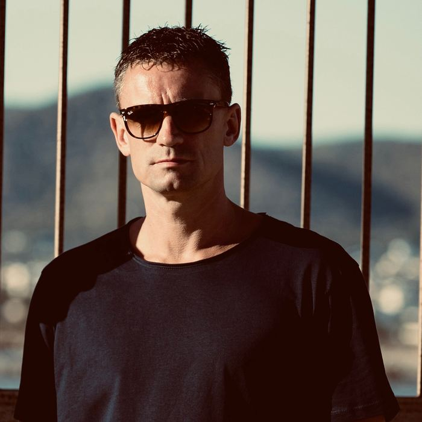
Babalou Launches New Project With Euphoric Groover “El Sonido”
9 January 2019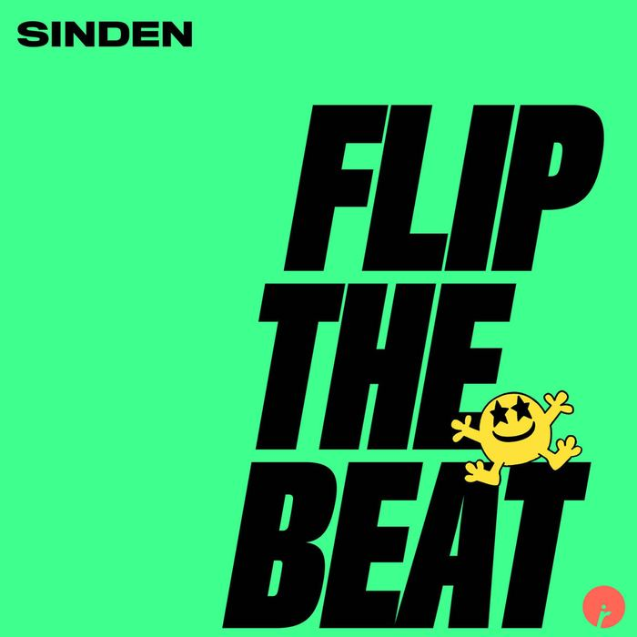
Sinden Stays True to Sample Culture on “Flip the Beat” for Insomniac Records
15 December 2018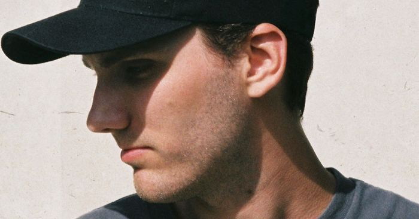
Raito Throws Down Rave-Heavy Techno With “Can You See”
12 December 2018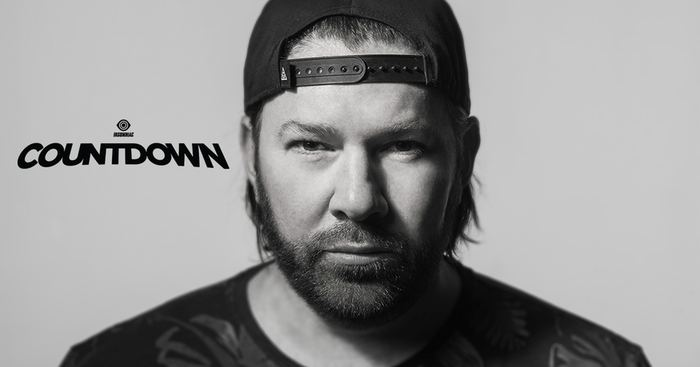
Shiba San Brings a French Touch to His Unbeatable House Grooves
11 December 2018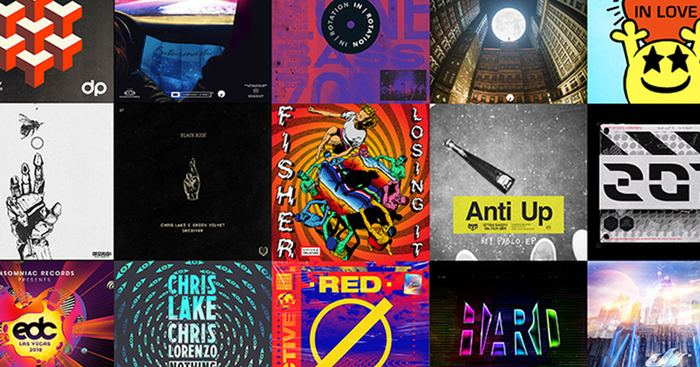
Insomniac Spreads Its Wings Into Distribution and Label Management With Insomniac Music Group
11 December 2018Frankly Watts Serves Up a Minimal-Minded Slice of Groovy Acid With “Don’t Bite That”
6 December 2018Benson Calls on Motez for a Slick Remix of “Faith”
3 December 2018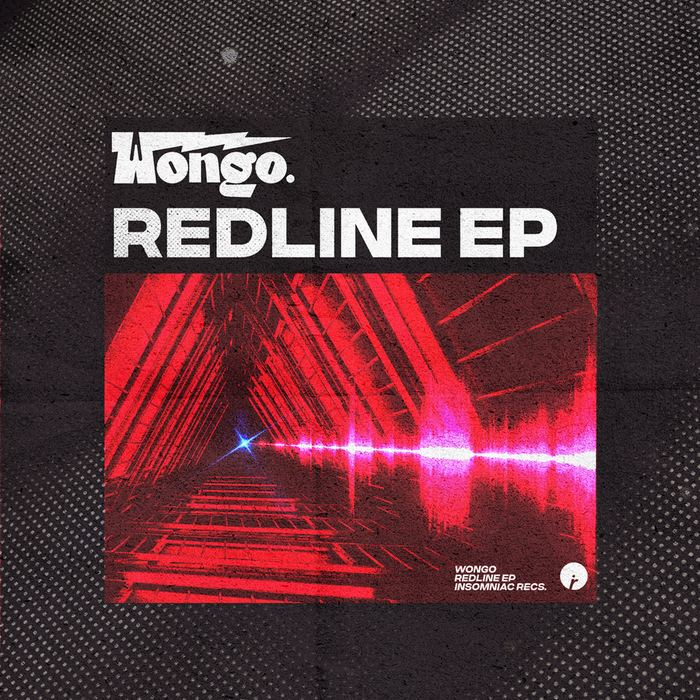
Wongo Maxes Out the Energy on ‘Redline’ EP for Insomniac Records
1 December 2018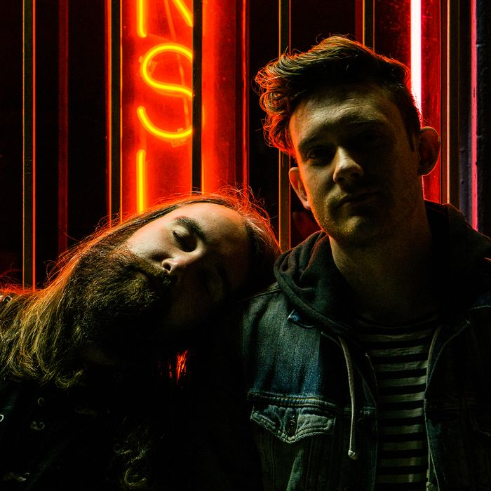
Botnek Confirm They “Can’t Remember” With a Devastating Tech House Weapon
30 November 2018Day.Din Drops His Top 10 Trance Tracks for Dreamstate SoCal 2018
22 November 2018RAM Isn’t Pulling Any Punches With His Dreamstate SoCal 2018 Mix
21 November 2018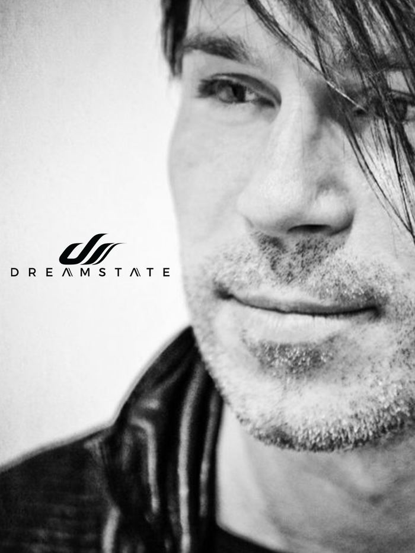
BT Brings the Past, Present and Future of Trance to Dreamstate SoCal 2018
21 November 2018Giuseppe Ottaviani Selects His Top 10 Trance Weapons for Dreamstate SoCal 2018
20 November 2018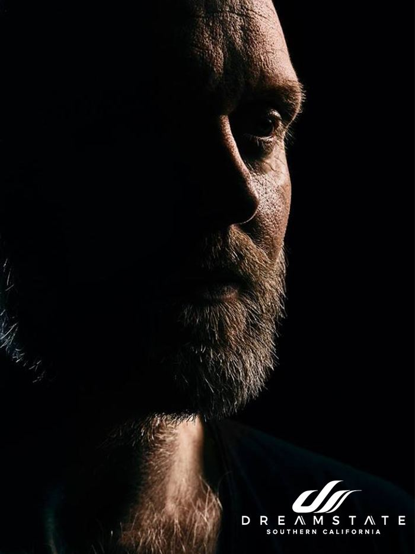
Solarstone Is Bringing Pure Trance to Dreamstate SoCal 2018
19 November 2018ShockOne Unleashes Pure Drum & Bass Vocal Euphoria With “Underloved”
17 November 2018Volac and Dustycloud Forge a France-Russian Alliance With G-House Flavored “Bass Zone” for IN / ROTATION
15 November 2018Lorenzo Bartoletti Fashions Feisty Melodic Techno Weapon “Cinque Marzo”
15 November 2018Das Kapital and MNNR Drop Rollicking Rollercoaster “XTC”
30 October 2018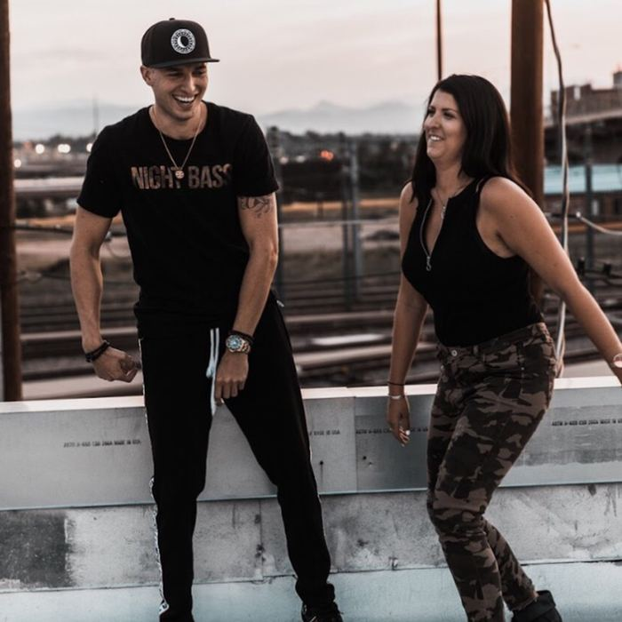
BIJOU and AViVA Drop Dark Ghetto-House Weapon “Run It Back”
26 October 2018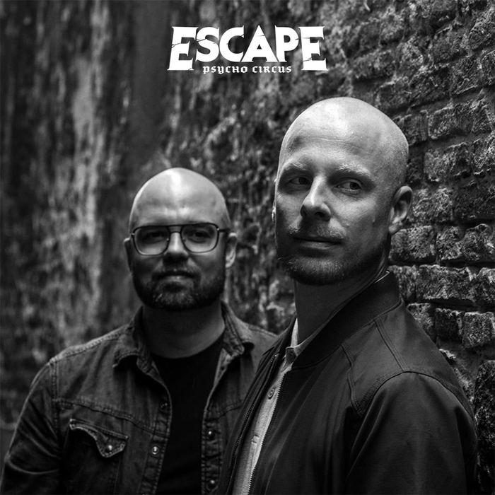
Tinlicker Traverses the Smoothest Grooves on Escape: Psycho Circus 2018 Mix
22 October 2018Matador Throws a Pulsing Acid Groove Over “Aergew Neka”
11 October 2018Josh Brown Drops Booming Belter “Malfunktion”
9 October 2018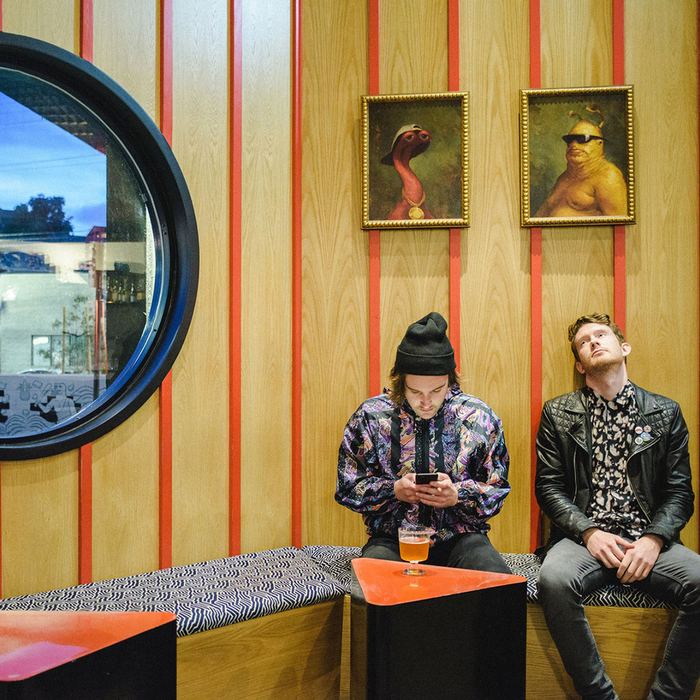
Botnek Further Cultivate Their House-Head Mentality With Earthshaking “Vibrate”
2 October 2018Jonas Rathsman Conjures Magnificent Deep Tech on “Glades of Glory”
20 September 2018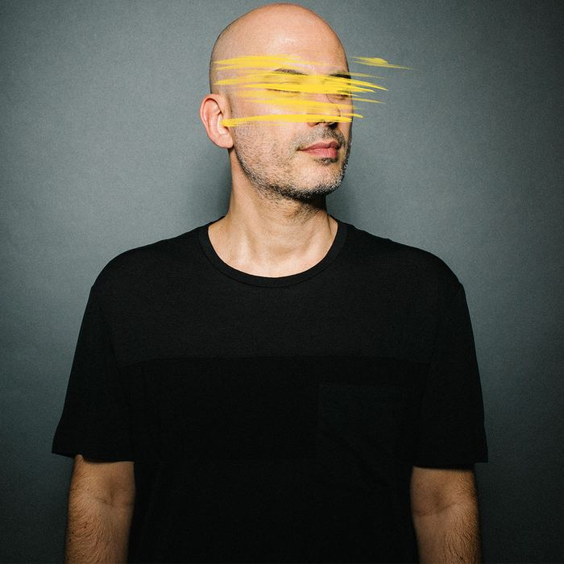
Riva Starr Throws a Curveball With “Disco Loco”
17 September 2018Double Agent Drops Catchy Vocal House Banger “Come Alive”
15 September 2018Bijou Lays It Down Ghetto-House Style With “Do Not Disturb”
12 September 2018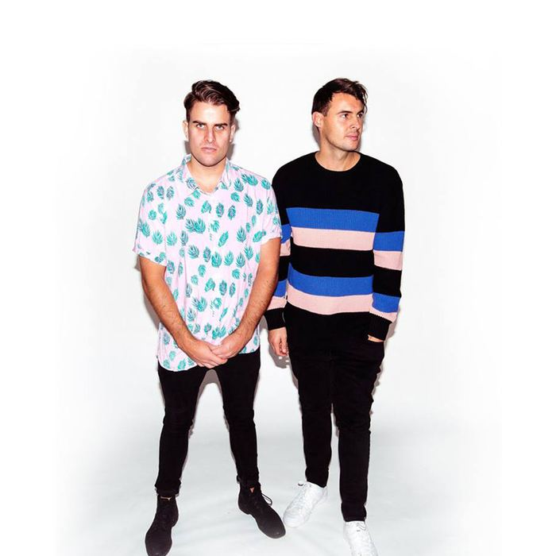
Go Freek Drops a Killer Vocal House Hit With “Love Is the Weapon”
31 August 2018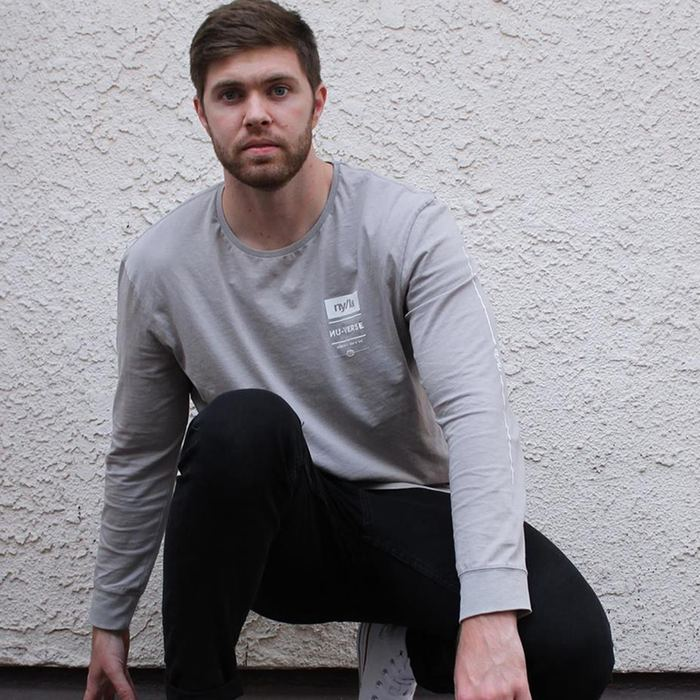
Zendlo Gets Bass-Heavy and Weird on “My Mind”
23 August 2018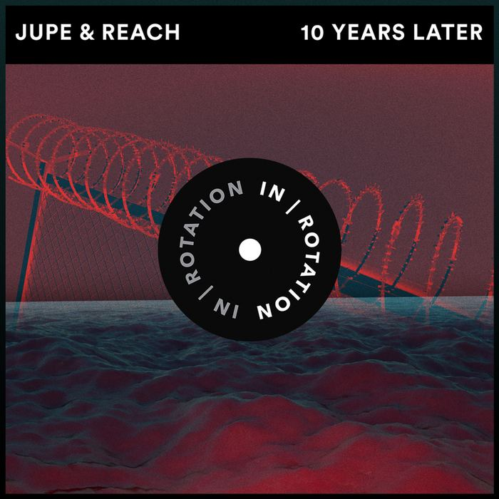
Jupe and Reach Put Their Own Spin on Free-Form Bass With “Ten Years Later” on IN / ROTATION
23 August 2018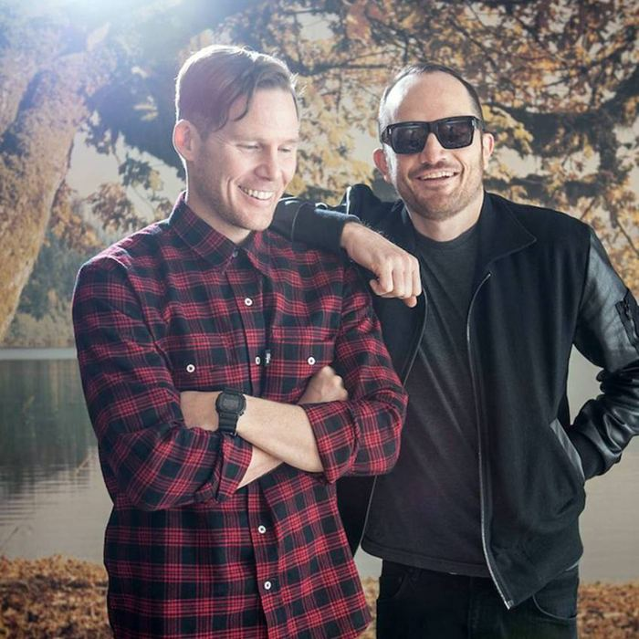
Smalltown DJs Drop a Bumpin’ and Jackin’ Remix of “Act Right”
16 August 2018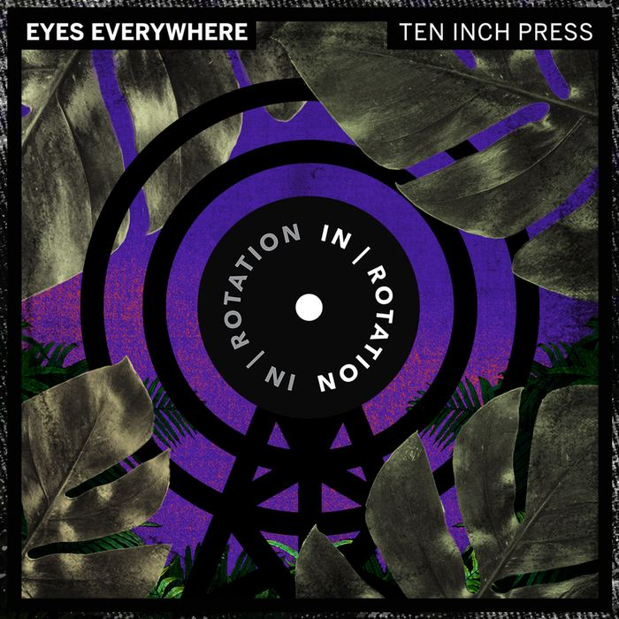
Eyes Everywhere Drops D&B-Sampled Tech House Groove “Ten-Inch Press” on IN / ROTATION
11 August 2018VIVID Creates a World of Color on Vocal Future House Cut “Higher”
6 August 2018Treasure Fingers Triggers the Red Alert With Squiggly, Wiggly Acid on “Bugout”
25 July 2018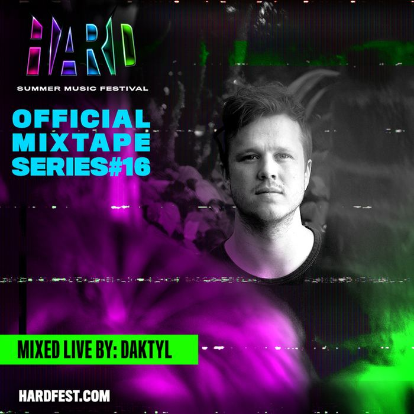
Daktyl Packs Eclectic Electronic Bliss Into His HARD Summer 2018 Mixtape
23 July 2018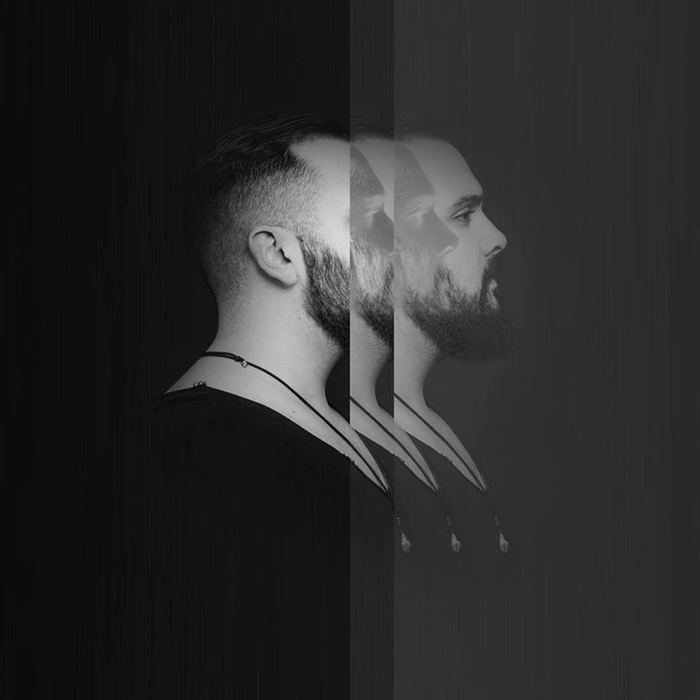
Victor Ruiz Reveals the Dark Beauty That Lies in “The Eye of the Beholder”
12 July 2018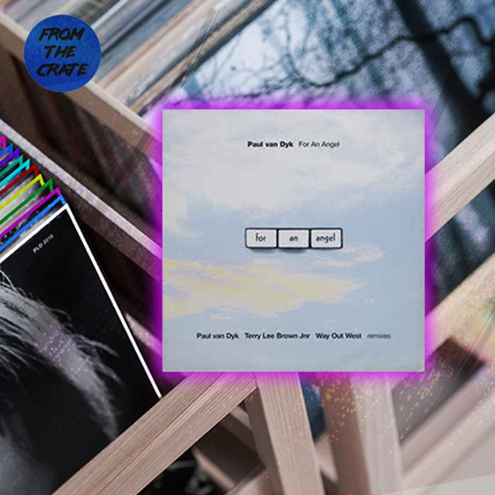
Paul van Dyk “For an Angel”
12 July 2018Kim Anh Channels a Swirl of Sexy Acid Funk on “Pleasure”
12 July 2018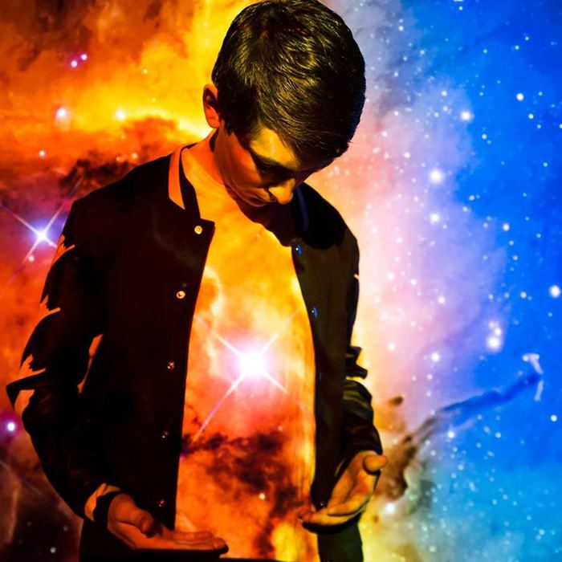
Notaker Goes Into Story-Telling Mode on Powerhouse Progressive Collab “Machina” Alongside Eminence
7 July 2018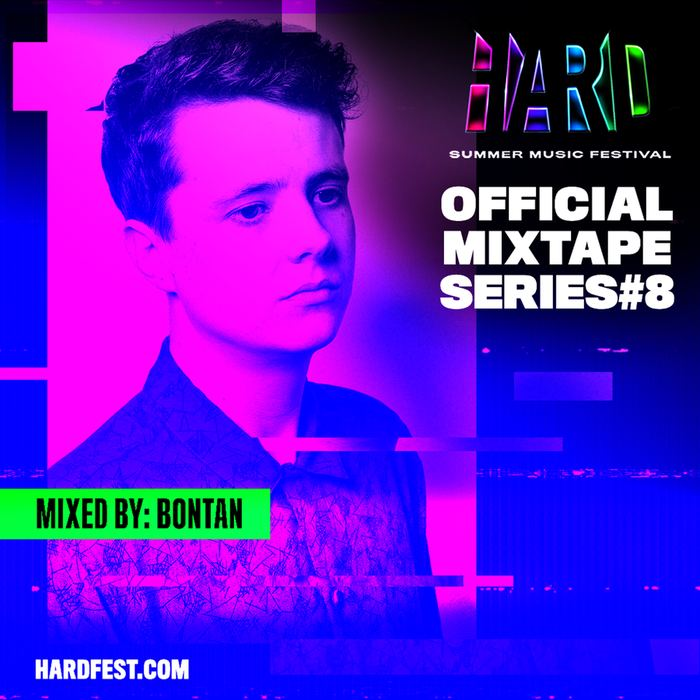
Bontan Showcases His Formidable Tech House on HARD Summer 2018 Mixtape
28 June 2018Rinzen Unveils His Transcendent Electric Forest 2018 Playlist
20 June 2018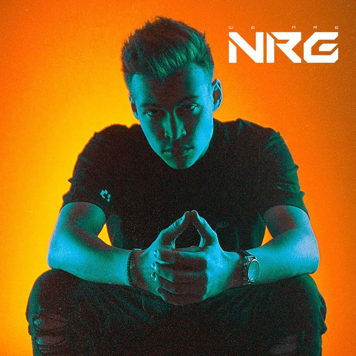
Curbi Shows Some Love to His Favorite Stateside Artists in His We Are NRG 2018 Playlist
14 June 2018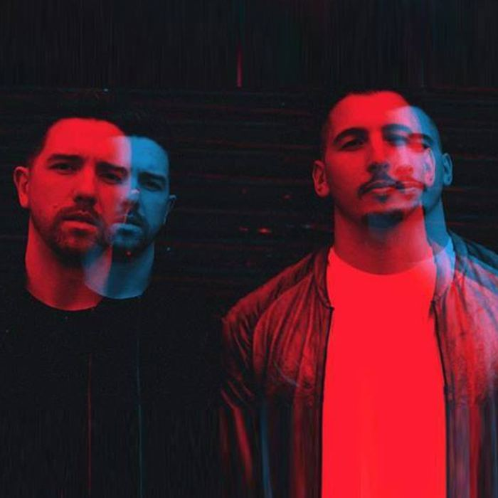
Tough Love Unleash a Jackin’ Weapon on Club Sweat That’s “Platinum & Gold”
7 June 2018Metronome #150: Icarus
5 June 2018Kuo Climax Makes His Hot Creations Debut With Hypnotic Roller “Nacrem”
24 May 2018Das Kapital Drops Euphoric Progressive Breaks Bomb With “Change Your Mind” Remix
17 May 2018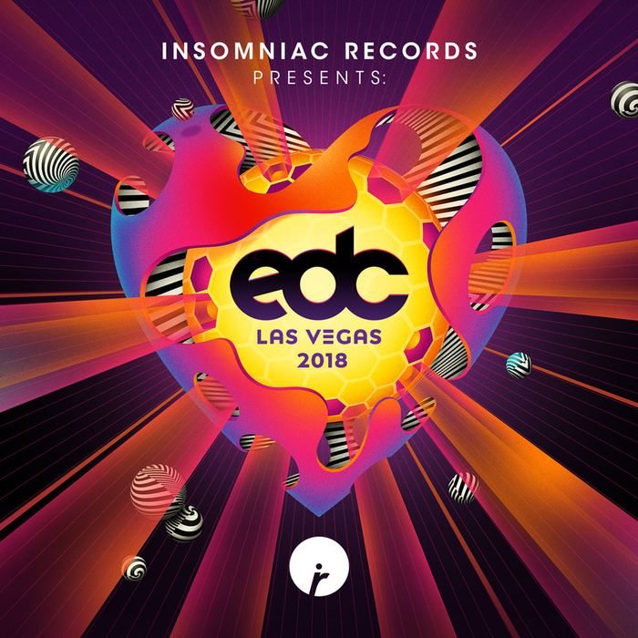
Insomniac’s ‘EDC Las Vegas 2018 Compilation’ Is as Massive as the Festival Itself
11 May 2018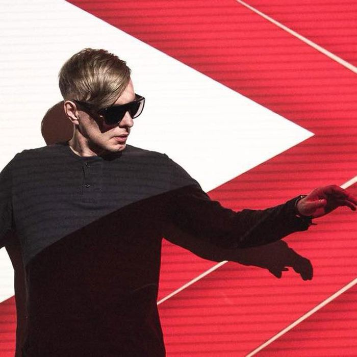
Electro Renegade Proxy Returns With a Tech-Infused Dose of “Afterburner”
9 May 2018ilan Bluestone Shows His ‘Scars’ on Euphoric EDC Las Vegas 2018 Mix
8 May 2018Modd Brings an After-Hours Glow to the Deep House Dancefloor With “Neruda”
7 May 2018Omair Spreads the Ethereal Trance Truth on Laser-Kissed “Fake News”
30 April 2018Downlowd Shares “Gone” From His Momentous ‘Origins’ EP Project
26 April 2018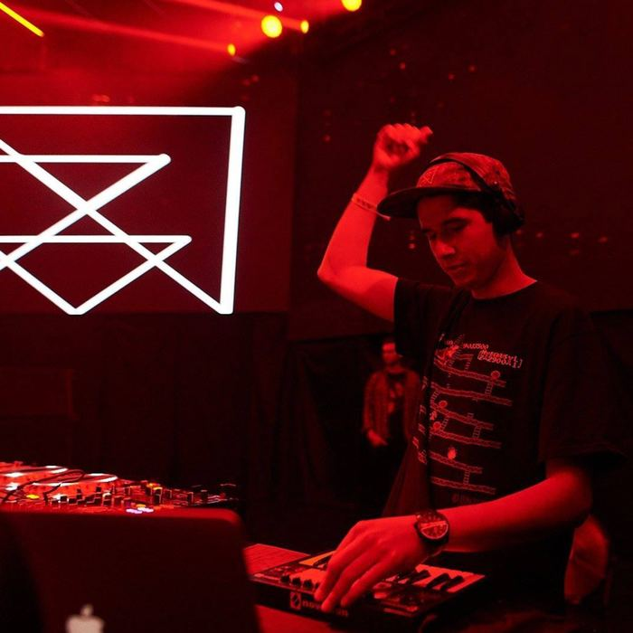
Metronome #146: Monstergetdown
24 April 2018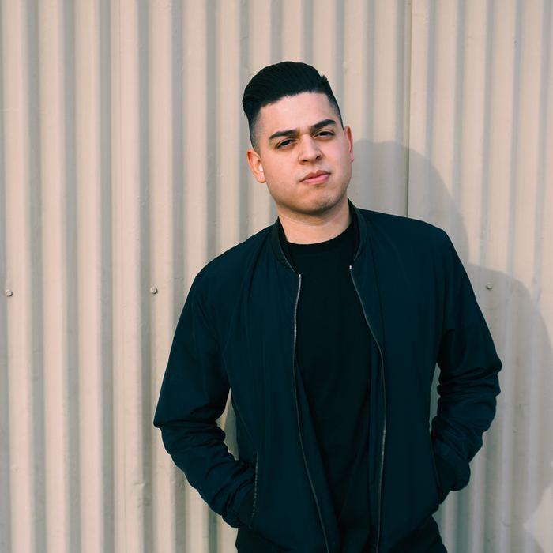
Steady Rock Drops Bleepy G-House Banger “Grippin’ 6”
17 April 2018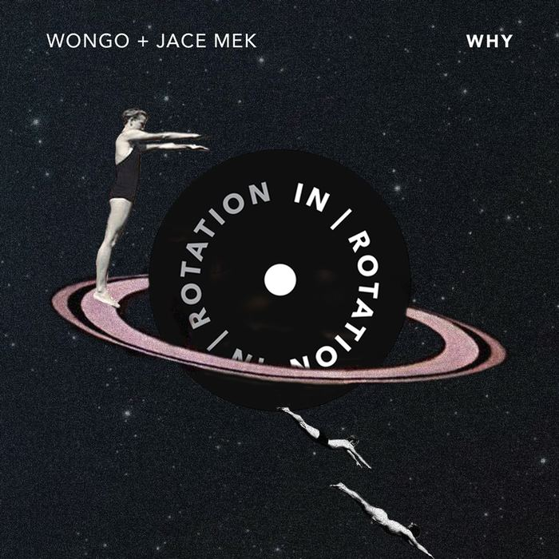
Jace Mek and Wongo Create Wacky Electro Fury on “Why” for IN / ROTATION
13 April 2018Syskey Debuts on Mixmash Deep With Dark House Thumper “Mind Right”
11 April 2018Mason Collective Steps Up With “Try That Pattern” on Stacey Pullen’s Blackflag Imprint
3 April 2018David Keno Drops Trippy Slice of Tech-House Fun With “Don’t Hold Back”
28 March 2018Ken Loi Drops “Serendipity,” Another Silky-Smooth Vocal House Offering
16 March 2018The Golden Boy Drops Slamming Party Rocker “Street Right” for Elrow’s WMC Comp
12 March 2018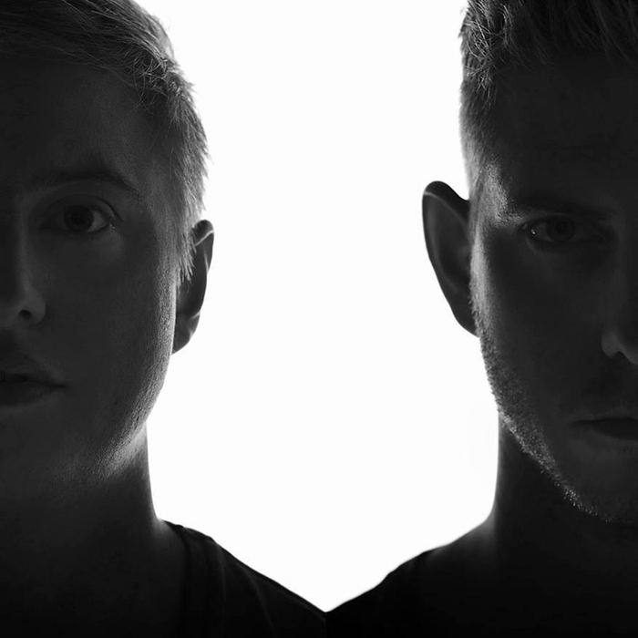
Spektre Drops a Stomping Remix of “Memories” for Italy’s Loose Records
28 February 2018Grensta Drops Some Vintage Deep Grooves on “Tha Girl”
21 February 2018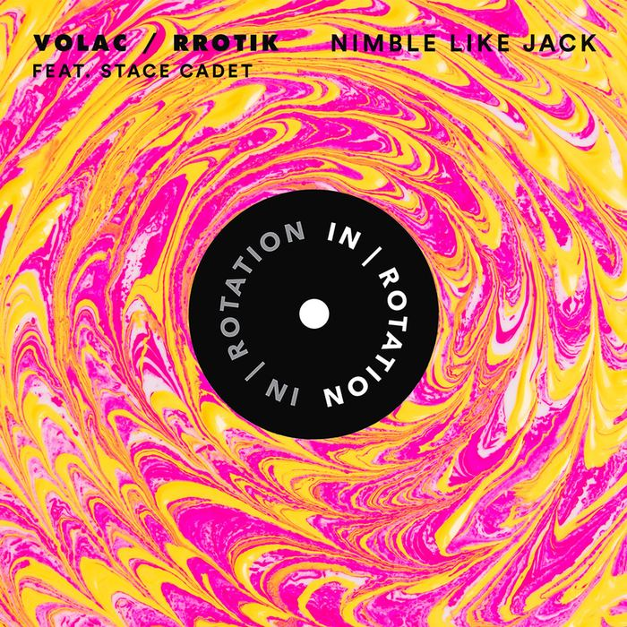
Volac and rrotik Create a Brazil-Russia Alliance on Slamming House Collab “Nimble Like Jack” for IN / ROTATION
16 February 2018Tony Romera Channels French Touch With “Hold Up”
9 February 2018Aylen Unleashes Mind-Melting Breaks Remix of “Bumps”
7 February 2018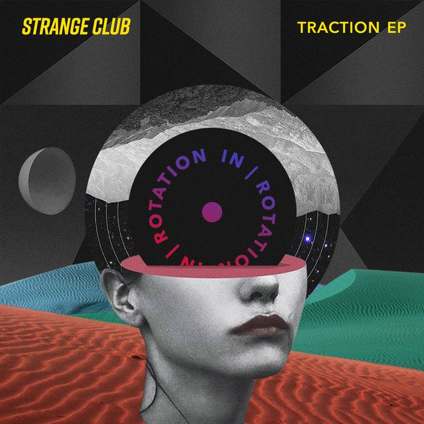
Strange Club Channels the Grit of Downtown L.A. on ‘Traction’ EP for IN / ROTATION
5 February 2018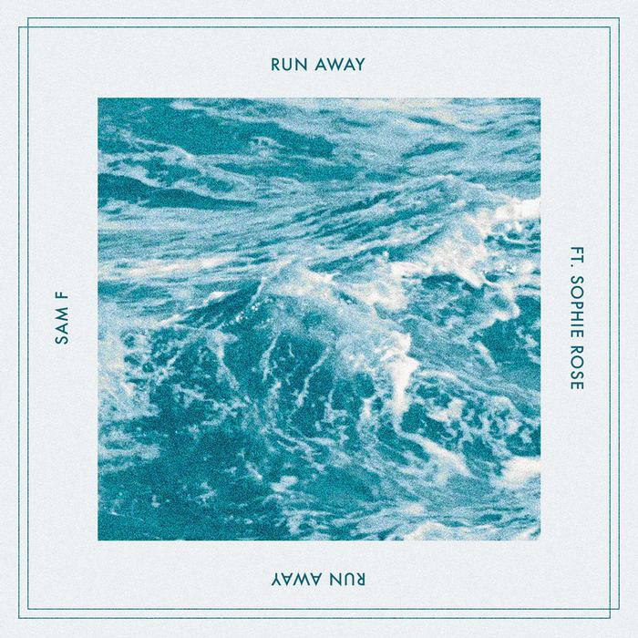
Sam F and Sophie Rose Unveil Their Next Massive Anthem “Run Away”
26 January 2018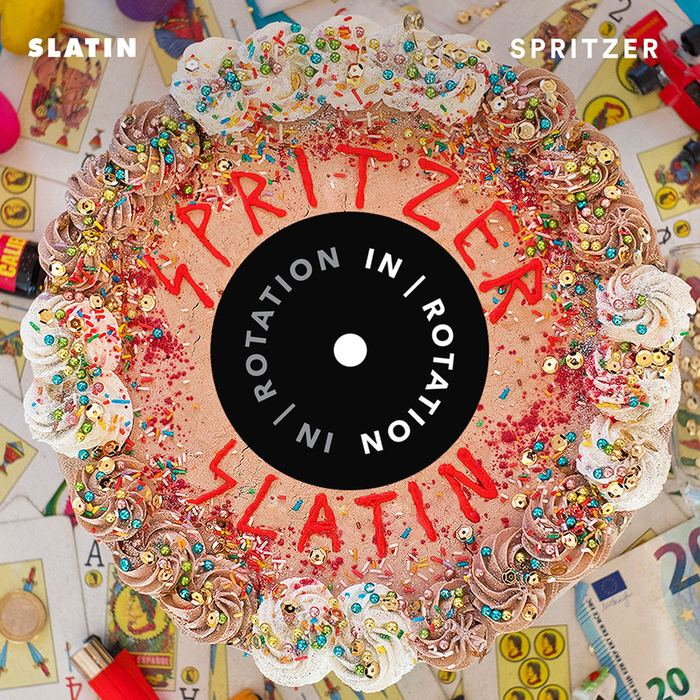
SLATIN Unleashes Slamming Debut EP ‘Spritzer / What You’ve Got’ on IN / ROTATION
16 January 2018Veeshy Arrives on Silk Music With “Aural Ambiance”
6 January 2018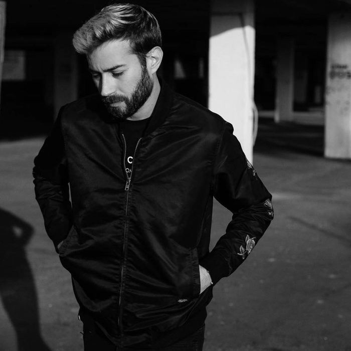
Sean Doron Takes Us Into Deep, Ethereal Territory With “Cala Comte”
3 January 2018Squire Dips Into Deep and Brooding Energy on “Shaker Life”
29 December 2017Plump DJs Wrap up Their Year With Monster Breakbeats on “Keep a Focus”
30 November 2017Metronome #137: rrotik
21 November 2017Convex Readies an Explosive Fusion of Melody and Bass on ‘Remembrance’ EP for IN / ROTATION
21 November 2017KOOS Unleashes Subversive Mayhem With “Ahem”
20 November 2017Torren Foot Gives a Tougher Take on the Tropical Charm of “Paradise”
14 November 2017Asdek & Jace Mek Unite for Gritty Bass-House Destroyer “Loose Mind”
9 November 2017PROFF Unleashes a Trancey Groove With “Innervate”
1 November 2017Cinthie Helps Watergate Club Celebrate 15 Years With Fresh House Bomb “Hatschi Hatschi”
30 October 2017Rell the Soundbender Unveils Gritty Bass House Single “Diablo House” on Insomniac Records
27 October 2017Ralph Lawson Shows the Elrow Crew Some “Acid Love” Alongside Rui-Z
25 October 2017